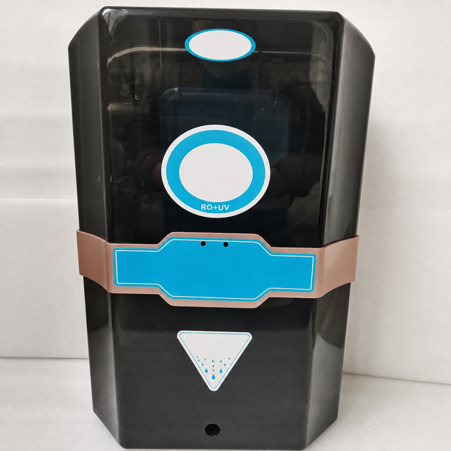
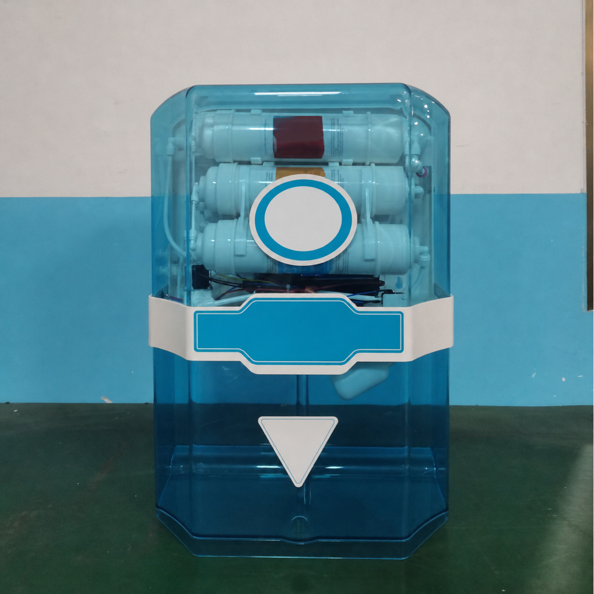

Máy lọc nước RO dạng tủ — 5 hoặc 6 cấp, UV tùy chọn
Máy lọc nước RO dạng tủ có thể cấu hình với năm hoặc sáu cấp lọc, UV tùy chọn và hỗ trợ cho dự án OEM/ODM.

Thông số kỹ thuật
Công suất, kích thước, thứ tự các lõi lọc, bơm, điện áp, công suất UV, số lượng đặt hàng và yêu cầu về chứng nhận được xác nhận trước khi báo giá.
- Công suất tạo nước
- Kích thước
- Hệ thống lọc
- yêu cầu về bơm
- Điện áp
- UV — Công suất
- Số lượng dự kiến
- các chứng nhận được yêu cầu
OEM/ODM
OEM/ODM: có hỗ trợ OEM/ODM theo từng dự án cụ thể. Thông số kỹ thuật có thể thay đổi tùy theo cấu hình được chọn. Vui lòng xác nhận các yêu cầu cuối cùng trước khi báo giá.
được xác nhận trước khi báo giá
Ứng dụng


Sản phẩm
Thiết kế dạng tủ này là một lựa chọn mua riêng biệt so với máy lọc nước RO khung hở 5/6/7 cấp.
Câu hỏi thường gặp dành cho bên mua
UV có được trang bị trong mọi cấu hình không?
Không. UV là tùy chọn và phải được xác nhận cho dự án trước khi báo giá.
Cần xác nhận những gì để nhận báo giá?
Xác nhận công suất màng, kích thước tổng thể, thứ tự các lõi lọc, yêu cầu về bơm, điện áp, công suất UV, số lượng đặt hàng và các chứng nhận được yêu cầu.
Yêu cầu về cấu hình
Thông số kỹ thuật có thể thay đổi tùy theo cấu hình được chọn. Vui lòng xác nhận các yêu cầu cuối cùng trước khi báo giá.